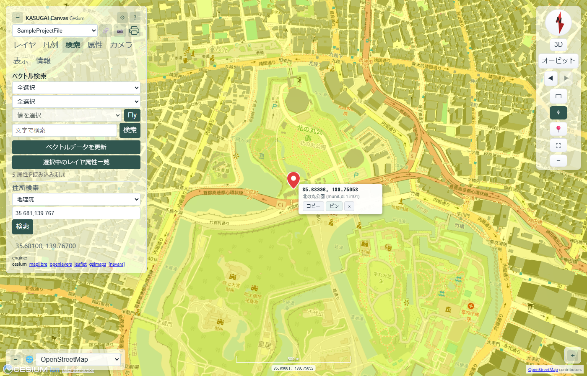

ナビゲーションツールバー（画面右下）の「地点座標」ボタンで起動する座標取得ツールです。
使い方
📌 地点座標の取得
起動すると十字カーソルで地図上をクリックし、ポップアップに選択中形式の座標を表示します（コピーボタン付き。度・度分秒・UTM・平面直角系は 1-6 表示 の「座標表示形式・測地系」セレクトで切替）。カメラ位置の読み上げもでき、ポップアップ上で表示形式をその場で変更して再表示・再コピーできます。Esc で終了します。

検索窓へ座標を直接入力してその地点へ FlyTo することもできます（1-3 検索）。
設定方法
.kasc の設定行はありません。表示形式（度・度分秒・UTM・平面直角系）と測地系は 1-6 表示 の「座標表示形式・測地系」セレクトで切り替えます（ブラウザに保持）。